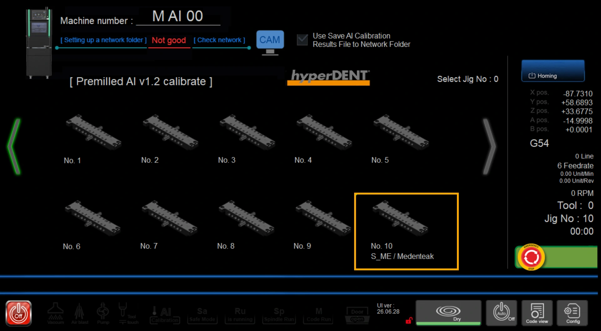
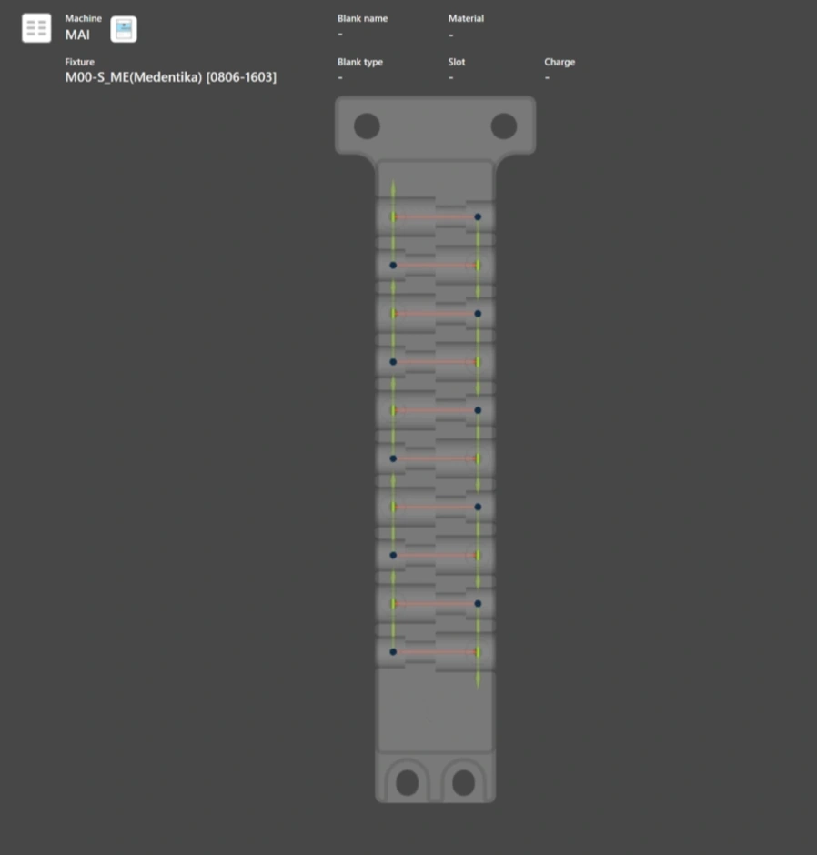
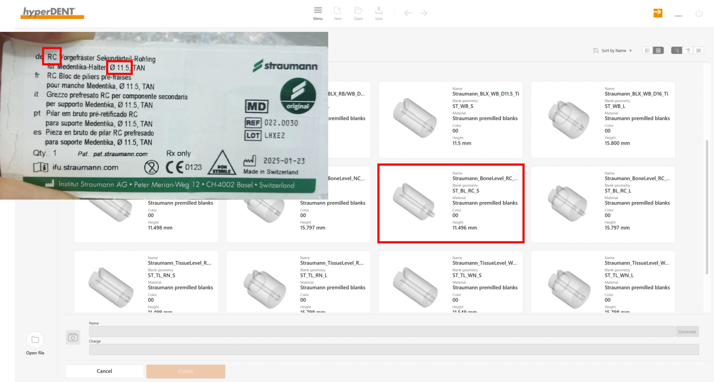
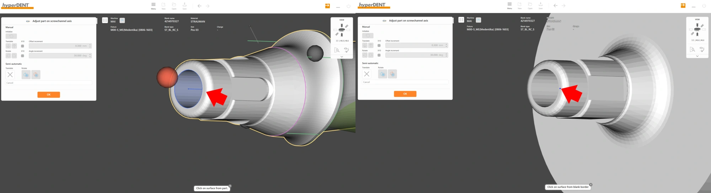
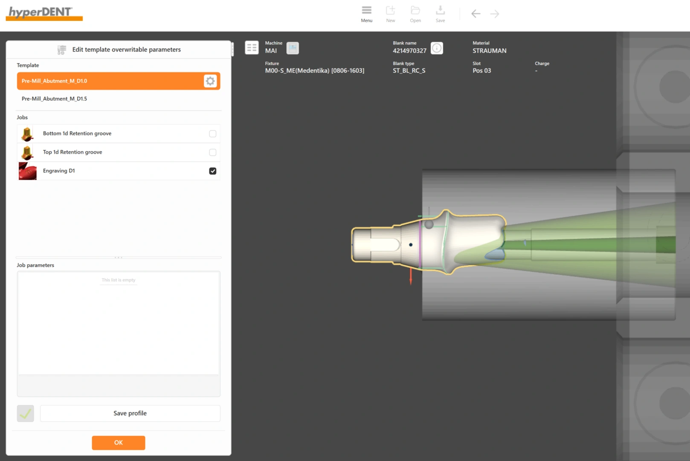

S ME 프리밀 지그 사용 방법 (Medentika 홀더)
- M AI 컨트롤 프로그램을 “26.11.17” 버전으로 업데이트하십시오.
- 지그 번호 10을 선택하여 V1.2 프리밀 캘리브레이션을 수행하십시오.


- 캘리브레이션이 끝나면 hyperDENT에서 각 슬롯의 원점이 픽스처 내부에 표시되어야 합니다.


- 필요한 hyperDENT Dbconfig가 적용되어 있는지 확인하십시오.
- 프리밀 지그에 장착된 블랭크 유형을 주의 깊게 확인하고, hyperDENT에서 해당하는 블랭크 유형을 선택하십시오.

- 어버트먼트 디자인을 블랭크 안에 배치하고, 인터페이스의 바닥을 기준으로 위치를 맞추십시오.

- 어버트먼트 베이스 라인이 블랭크의 끝부분 또는 약간 바깥쪽에 위치하는지 확인하십시오.

- 어버트먼트 디자인을 블랭크 안에 배치하고, 인터페이스의 바닥을 기준으로 위치를 맞추십시오.


- 위의 모든 항목을 확인한 뒤, 평소와 같이 계산과 가공을 진행하십시오.